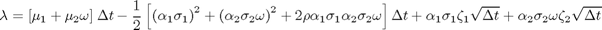

Contents
function lambda = CorrelatedTwoFactor(mu1,mu2,speed,dt,a1,a2,sig1,sig2,rho,zeta1,zeta2)
Input Parameters
| F0 | vector of initial forward rates |
| dates | valuation dates |
| expiry | contract expiry dates |
| sig1,sig2 | volatility of long and short contracts |
| mu1,mu2 | drift of long and short contracts |
| kappa | speed of mean reversion |
| dt | length of time slice in years |
| rho | correlation between long and short contracts |
| alpha1,alpha2 | seasonality adjustment to long and short volatility starting at January |
| eta1,eta2 | long and short normal random deviants |
Output Parameters
| F | matrix of simulated forward rates with dim(dates,expiry) |
Generate a vector of random movements of the forward rate for each contract month

lambda = (mu1 + mu2 .* speed) * dt ... - 0.5 * ((a1 * sig1)^2 + (a2 * sig2 .* speed).^2 ... + 2.0 * rho * a1 * sig1 * a2 * sig2 .* speed) * dt ... + a1 * sig1 .* zeta1 * sqrt(dt) + a2 * sig2 .* speed .* zeta2 * sqrt(dt);
Input argument "mu1" is undefined.
Error in ==> CorrelatedTwoFactor at 39
lambda = (mu1 + mu2 .* speed) * dt ...
end